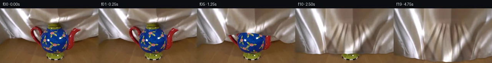

![首帧]()

Round 00
2026-11-05T17:12:28.617914+00:00像素候选变化代码 +255/−0inspection 更新
pixels c1e1ce709ffe1dbe · code f8fa6543f7f843e4
查看本轮 generate.py 真实 diff
--- previous/generate.py
+++ current/generate.py
@@ -0,0 +1,255 @@
+"""Local photograph warping and analytic silk drape; no model or renderer calls."""
+from pathlib import Path
+import json
+import numpy as np
+from PIL import Image, ImageDraw
+from scipy import ndimage, sparse
+from scipy.sparse.linalg import cg
+from scipy.interpolate import PchipInterpolator
+from artifact_io import save
+
+ROOT = Path(__file__).resolve().parent
+H, W, S = 144, 256, 3
+BASE = np.asarray(Image.open(ROOT / 'first_frame.png').convert('RGB'))
+
+
+def polygon_mask(points):
+ canvas = Image.new('L', (W, H))
+ ImageDraw.Draw(canvas).polygon(points, fill=255)
+ return np.asarray(canvas) > 0
+
+
+HANDLE = polygon_mask([(109,61),(105,52),(98,47),(90,46),(83,49),(79,57),
+ (79,68),(83,82),(91,96),(102,105),(113,110),
+ (116,102),(107,89),(105,73)])
+BODY = polygon_mask([(123,52),(121,47),(126,40),(135,36),(150,37),(158,41),
+ (161,50),(169,56),(175,63),(179,73),(182,86),(179,100),
+ (173,111),(161,120),(160,125),(162,131),(155,136),
+ (130,136),(121,132),(121,126),(126,119),(114,112),
+ (107,103),(103,90),(103,75),(109,62),(119,55)])
+SPOUT = polygon_mask([(171,105),(180,107),(185,97),(189,84),(194,73),
+ (199,66),(211,58),(210,54),(202,50),(193,54),
+ (184,62),(179,76),(174,88)])
+OBJECT = HANDLE | BODY | SPOUT
+
+
+def silk_source():
+ """Harmonic interpolation fills only unusable atlas samples.
+
+ Measured background silk remains exact outside the inpainting mask.
+ The table and entire object silhouette are excluded from texture sampling.
+ """
+ yy, xx = np.mgrid[:H, :W]
+ boundary = np.interp(np.arange(W),
+ [0,15,30,45,65,80,100,125,150,180,205,225,240,255],
+ [94,82,76,77,77,80,76,72,71,79,78,75,74,71])
+ unsafe = (yy >= boundary[None, :] - 2) | ndimage.binary_dilation(OBJECT, iterations=2)
+ # Only the upper 100 rows can be sampled by the inverse cloth warp.
+ data = BASE[:100].astype(np.float64)
+ holes = unsafe[:100]
+ h, w = holes.shape
+ ids = np.full((h,w), -1, dtype=np.int32)
+ ids[holes] = np.arange(int(holes.sum()))
+ rr, cc = np.nonzero(holes)
+ n = len(rr)
+ rows, cols, vals = [], [], []
+ rhs = np.zeros((n,3), dtype=np.float64)
+ diagonal = np.zeros(n)
+ for dy, dx in [(-1,0),(1,0),(0,-1),(0,1)]:
+ r, c = rr + dy, cc + dx
+ good = (r >= 0) & (r < h) & (c >= 0) & (c < w)
+ i = np.flatnonzero(good)
+ r, c = r[good], c[good]
+ diagonal[i] += 1
+ j = ids[r,c]
+ unknown = j >= 0
+ rows.extend(i[unknown]); cols.extend(j[unknown]); vals.extend(-np.ones(unknown.sum()))
+ rhs[i[~unknown]] += data[r[~unknown],c[~unknown]]
+ rows.extend(np.arange(n)); cols.extend(np.arange(n)); vals.extend(diagonal)
+ matrix = sparse.csr_matrix((vals,(rows,cols)),shape=(n,n))
+ convergence = []
+ for channel in range(3):
+ solution, info = cg(matrix, rhs[:,channel], rtol=1e-8, maxiter=4000)
+ assert info == 0, ('silk interpolation', info)
+ data[rr,cc,channel] = solution
+ convergence.append(int(info))
+ # Restore modest photographic fiber detail inside the filled portion.
+ residual = BASE[:33].astype(float) - ndimage.gaussian_filter(
+ BASE[:33].astype(float), sigma=(1.2,1.2,0))
+ py = np.mod(np.arange(100)[:,None] * .74 + np.arange(W)[None,:] * .07, 31)
+ px = np.broadcast_to(np.arange(W)[None,:], (100,W))
+ detail = np.stack([ndimage.map_coordinates(residual[:,:,c], [py,px], order=1,
+ mode='reflect') for c in range(3)], axis=-1)
+ fade = np.clip(ndimage.distance_transform_edt(holes) / 8, 0, 1)
+ data += detail * fade[:,:,None] * .75
+ return np.clip(data, 0, 255), holes, convergence
+
+
… diff truncated; 168 more lines …